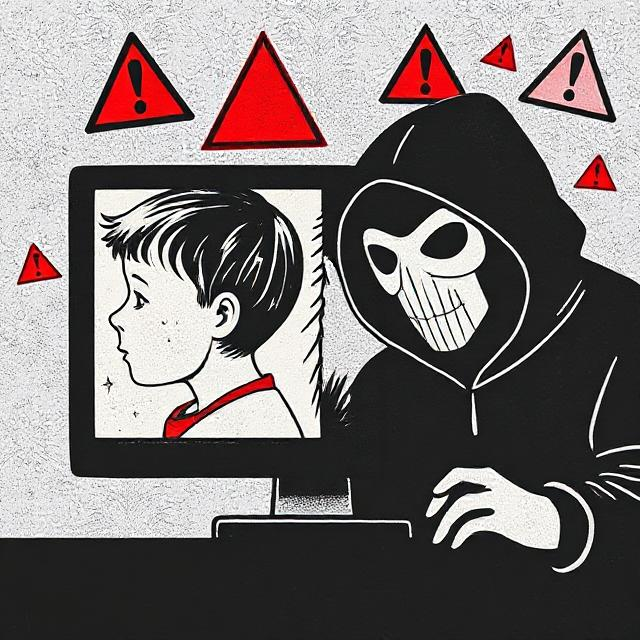

Jak se chránit před kybergroomingem?
Chránit se před kybergroomingem je důležité pro bezpečnost na internetu. Zde jsou některé tipy:
- Nikdy nesdílej osobní informace s cizími lidmi.
- Buď opatrný/á při komunikaci s neznámými lidmi online.
- Pokud někdo působí podezřele, přerušte kontakt a nahlaste ho.
- Mluv s rodiči nebo důvěryhodnou osobou o podezřelých situacích.
- Nikdy se nescházej s někým, koho znáš jen z internetu.
Další tipy pro bezpečnost online:
Internet je skvělé místo pro učení a zábavu, ale je důležité být obezřetný. Zde jsou další tipy, jak zůstat v bezpečí:
- Používejte silná hesla a nikdy je nesdílejte s ostatními.
- Nainstalujte si antivirový software a pravidelně aktualizujte své zařízení.
- Buďte opatrní při klikání na odkazy nebo stahování souborů z neznámých zdrojů.
- Nastavte si soukromí na sociálních sítích tak, aby vaše informace byly viditelné pouze pro přátele. 